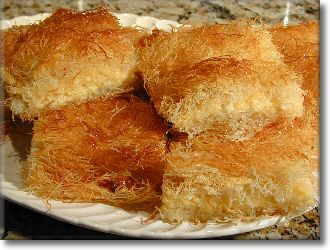

Ararat Home Kadayif
Yield: 24 servings
Ingredients
- 2 lb Kadayif dough(Shredded Filo)
- 1 1/2 c Butter, melted
- 1 qt Half and half cream
- 1 qt Heavy cream
- 3/4 c Cornstarch
- 3/4 c Milk
- 4 c Sugar
- 3 c Water
- Few drop fresh Lemon Juice
Directions
- Cut and fluff 1 lb of Kadayif dough in bowl with hands.
- Add half melted butter and mix until strands are evenly coated.
- Spread evenly in lightly buttered 17x13-inch baking pan.
- Combine half and half and heavy cream in large saucepan. Bring to slow
- boil over low heat.
- Combine cornstarch and milk, stirring until cornstarch is dissolved.
- Slowly add to cream mixture, stirring constantly, until mixture returns
- to slow boil. Spread hot cream filling over kadayif in pan.
- Cut and fluff remaining 1 lb. of kadayif in bowl. Add remaining melted
- butter and mix with hands until strands are evenly coated. Spread over
- top of cream layer, pressing down firmly to form an even surface.
- Place on lowest oven rack and bake at 450 degrees F. until golden brown,
- about 20-25 minutes. If not golden, move pan to top rack and bake 5 to
- 10 minutes longer.
- Meanwhile, prepare syrup. Combine sugar and water in saucepan and boil
- 5 to 10 minutes. Add lemon juice. Cool. Pour cold syrup evenly over
- kadayif as soon as it is removed from the oven.
- Cut into squares to serve. Enjoy!